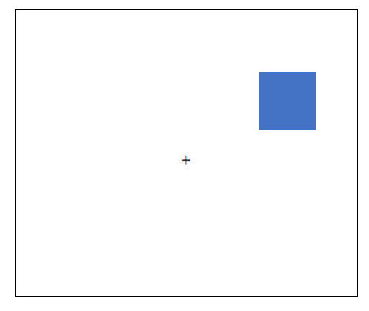

<!DOCTYPE html>
<html>

<head>
    <title>Cards</title>

    <!-- online run-->
    <script src="lib/vendors/jspsych-7.1.2/jspsych.js"></script>
    <script src="lib/vendors/jspsych-7.1.2/plugin-html-keyboard-response.js"></script>
    <script src="lib/vendors/jspsych-7.1.2/plugin-html-button-response.js"></script>
    <script src="lib/vendors/jspsych-7.1.2/plugin-preload.js"></script>
    <script src="lib/vendors/jspsych-7.1.2/plugin-fullscreen.js"></script>
    <script src="lib/vendors/jspsych-7.1.2/plugin-instructions.js"></script>
    <script src="lib/vendors/jspsych-7.1.2/plugin-survey-likert.js"></script>
    <script src="lib/vendors/jspsych-7.1.2/plugin-survey-text.js"></script>
    <script src="lib/vendors/jspsych-7.1.2/plugin-survey-multi-choice.js"></script>
    <script src="lib/vendors/jspsych-7.1.2/plugin-survey.js"></script>
    <link rel="stylesheet" href="lib/vendors/jspsych-7.1.2/jspsych.css">
    <link href="./css/my_exp.css" rel="stylesheet" type="text/css">
    <script type="text/javascript" src="lib/jspsych-7-pavlovia-2022.1.1.js"></script>

    <!-- local run
    <script src="jspsych/dist/jspsych.js"></script>
    <script src="jspsych/dist/plugin-html-keyboard-response.js"></script>
    <script src="jspsych/dist/plugin-html-button-response.js"></script>
    <script src="jspsych/dist/plugin-preload.js"></script>
    <script src="jspsych/dist/plugin-instructions.js"></script>
    <script src="jspsych/dist/plugin-survey-likert.js"></script>
    <script src="jspsych/dist/plugin-survey-text.js"></script>
    <script src="jspsych/dist/plugin-survey-multi-choice.js"></script>
    <script src="jspsych/dist/plugin-survey.js"></script>
    <script src="jspsych/dist/plugin-fullscreen.js"></script>
    <script src="jspsych/dist/plugin-html-slider-response.js"></script>
    <link href="jspsych/dist/jspsych.css" rel="stylesheet" type="text/css" />
    <link href="css/my_exp.css" rel="stylesheet" type="text/css"/>-->

</head>

<body>

    <script>

        var jsPsych = initJsPsych({
            on_finish: function () {
                download_csv(jsPsych.data.get().csv());
            }
         });
        /*this defines the css properties according to the window_screen_size*/
        var root = document.documentElement;
        var vis_angle_px = 105
        var square_width = 51.4
        root.style.setProperty('--top_middle', window.screen.height / 2 + "px");
        root.style.setProperty('--left_middle', window.screen.width / 2 - (square_width / 2) + "px");
        root.style.setProperty('--top_a', window.screen.height / 2 - vis_angle_px + "px");
        root.style.setProperty('--left_a', window.screen.width / 2 - vis_angle_px + "px");
        root.style.setProperty('--top_b', window.screen.height / 2 - 2 * vis_angle_px + "px");
        root.style.setProperty('--left_b', window.screen.width / 2 - 2 * vis_angle_px + "px");
        root.style.setProperty('--top_c', window.screen.height / 2 - 3 * vis_angle_px + "px");
        root.style.setProperty('--left_c', window.screen.width / 2 - 3 * vis_angle_px + "px");
        root.style.setProperty('--top_d', window.screen.height / 2 - vis_angle_px + "px");
        root.style.setProperty('--right_d', window.screen.width / 2 - vis_angle_px + "px");
        root.style.setProperty('--top_e', window.screen.height / 2 - 2 * vis_angle_px + "px");
        root.style.setProperty('--right_e', window.screen.width / 2 - 2 * vis_angle_px + "px");
        root.style.setProperty('--top_f', window.screen.height / 2 - 3 * vis_angle_px + "px");
        root.style.setProperty('--right_f', window.screen.width / 2 - 3 * vis_angle_px + "px");
        root.style.setProperty('--bottom_g', window.screen.height / 2 - vis_angle_px + "px");
        root.style.setProperty('--right_g', window.screen.width / 2 - vis_angle_px + "px");
        root.style.setProperty('--bottom_h', window.screen.height / 2 - 2 * vis_angle_px + "px");
        root.style.setProperty('--right_h', window.screen.width / 2 - 2 * vis_angle_px + "px");
        root.style.setProperty('--bottom_i', window.screen.height / 2 - 3 * vis_angle_px + "px");
        root.style.setProperty('--right_i', window.screen.width / 2 - 3 * vis_angle_px + "px");
        root.style.setProperty('--bottom_j', window.screen.height / 2 - vis_angle_px + "px");
        root.style.setProperty('--left_j', window.screen.width / 2 - vis_angle_px + "px");
        root.style.setProperty('--bottom_k', window.screen.height / 2 - 2 * vis_angle_px + "px");
        root.style.setProperty('--left_k', window.screen.width / 2 - 2 * vis_angle_px + "px");
        root.style.setProperty('--bottom_l', window.screen.height / 2 - 3 * vis_angle_px + "px");
        root.style.setProperty('--left_l', window.screen.width / 2 - 3 * vis_angle_px + "px");

        root.style.setProperty('--upper1', window.screen.height / 2 - 3 * vis_angle_px + "px");
        root.style.setProperty('--upper2', window.screen.height / 2 - 2 * vis_angle_px + "px");
        root.style.setProperty('--upper3', window.screen.height / 2 - vis_angle_px + "px");

        root.style.setProperty('--lower1', window.screen.height / 2 - 3 * vis_angle_px + "px");
        root.style.setProperty('--lower2', window.screen.height / 2 - 2 * vis_angle_px + "px");
        root.style.setProperty('--lower3', window.screen.height / 2 - vis_angle_px + "px");
        //---------------------------------------------------------------------------------------------
        root.style.setProperty('--left_card', window.screen.width / 2 - 2 * vis_angle_px + "px");
        root.style.setProperty('--right_card', window.screen.width / 2 - 2 * vis_angle_px + "px");
        root.style.setProperty('--top_card', window.screen.height / 2 - 90 + "px");
        root.style.setProperty('--top_reward', window.screen.height / 2 + "px");
        root.style.setProperty('--left_reward', window.screen.width / 2 + "px");

        /*---------------------------------------------------- 
        Variabels for card game
        ------------------------------------------------------*/
        var instructions_images = ['images/group_shapes.jpg', 'images/reward_example.jpg','images/no_reward_example.jpg']
        var practice_deck_images = ['images/practice/1.jpg','images/practice/2.jpg','images/practice/3.jpg','images/practice/4.jpg','images/practice/5.jpg','images/practice/6.jpg','images/practice/7.jpg','images/practice/8.jpg','images/practice/9.jpg','images/practice/10.jpg' ]
        var test_deck_images = ['images/test/1.jpg', 'images/test/2.jpg', 'images/test/3.jpg', 'images/test/4.jpg', 'images/test/5.jpg','images/test/6.jpg',
        'images/test/7.jpg', 'images/test/8.jpg', 'images/test/9.jpg', 'images/test/10.jpg', 'images/test/11.jpg', 'images/test/12.jpg', 'images/test/13.jpg',
        'images/test/14.jpg', 'images/test/15.jpg', 'images/test/16.jpg','images/test/17.jpg', 'images/test/18.jpg', 'images/test/19.jpg', 'images/test/20.jpg', 'images/test/21.jpg',
        'images/test/22.jpg', 'images/test/23.jpg', 'images/test/24.jpg', 'images/test/25.jpg', 'images/test/26.jpg', 'images/test/27.jpg', 'images/test/28.jpg',
        'images/test/29.jpg', 'images/test/30.jpg', 'images/test/31.jpg', 'images/test/32.jpg', 'images/test/33.jpg', 'images/test/34.jpg', 'images/test/35.jpg', 'images/test/36.jpg',
        'images/test/37.jpg', 'images/test/38.jpg', 'images/test/39.jpg', 'images/test/40.jpg']
        var reward_images = ['images/zero_coins.png', 'images/won1-no-back1.png']
        var fixation = '<div class="fixation">+</div>'

        var FB_matrix = [0.4, 0.6, 0.4, 0.6];
        var current_cards_practice_trial = 0;
        var current_cards_exp_trial = 0;
        var block = 0;
        var blocks = 10;
        var draw_cards;
        var drawn_cards;
        var left_card;
        var right_card;
        var selected;
        var reward;
        var rewards_for_block = 0;
        
        /*---------------------------------------------------- 
        Variabels for squares game
        ------------------------------------------------------*/
        /*randomly assigning the mapping of the response-keys to be ks or sk */ //cr: what does it mean? ks? sk?
        mapping = jsPsych.randomization.sampleWithoutReplacement(['sk', 'ks'], 1)[0];
        /* getting the images to display */
        var change_detection_images = ['images/squares/black.png', 'images/squares/blue.png', 'images/squares/brown.png', 'images/squares/cyan.png', 'images/squares/green.png', 'images/squares/magenta.png', 'images/squares/orange.png', 'images/squares/red.png', 'images/squares/yellow.png']
        /* setting the locations to randomize from */
        var locations = [""
            right_with_tag = ""
            return left_with_tag + right_with_tag + fixation;
        }
        
        function show_choice() {

            last_choice = jsPsych.data.getLastTrialData().values()[0].response
            if (last_choice == 's') {
                selected = 0
                card_to_show = ""
            }
            else if (last_choice == 'k') {
                selected = 1
                card_to_show = ""
            }
            else if (last_choice == null) {
                selected = null
                reward = 0
                return '<div style="font-size:40px;">Please respond faster!</div>'
            }
            else {
                selected = -1
                reward = 0
                return '<div style="font-size:40px;">wrong key!</div><br><br><div style="font-size:20px;">Please use the ‘K’ and ‘S’ keys to select the left or right card respectively. </div>'
            }
            return card_to_show + fixation
        }

        function show_reward(current_trial_num) {
            key_selected = jsPsych.data.getLastTrialData().values()[0].key_selected
            if (key_selected == 0) {
                card_to_show = ""
            }
            else if (key_selected == 1) {
                card_to_show = ""
            }
            else if (key_selected == null) {
                return '<div style="font-size:40px;">Please respond faster!</div>'
            }
            else {
                return '<div style="font-size:40px;">wrong key!</div><br><br><div style="font-size:20px;">Please use the ‘K’ and ‘S’ keys to select the left or right card respectively. </div>'
            }
            card_selected = jsPsych.data.getLastTrialData().values()[0].card_selected 
            prob_reward = FB_matrix[card_selected]; 
            prob_unreward = 1 - prob_reward; 
            reward = jsPsych.randomization.sampleWithReplacement([0, 1], 1, [prob_unreward, prob_reward])[0]; 
            reward_to_show = "" 


            return card_to_show + reward_to_show
        }
        
        function images_for_block_start() {
            images = test_deck_images.slice(block * 4, block * 4 + 4)
            return images
        }
        /*---------------------------------------------------- 
        Functions for squares game
        ------------------------------------------------------*/
        //This function decides on a random location for the test square
        function getRandomInt(max) {
            return Math.floor(Math.random() * Math.floor(max));
        }
        //This function picks random squares to show
        function get_squares(images, number_of_images) {
            return jsPsych.randomization.sampleWithoutReplacement(change_detection_images, number_of_images)
        }
        /*This function picks the locations in which the squares will be shown 
         It also takes care of equally randomizing the different quadrants   */
        function get_locations(locations_arr, number_of_images, locations_arr1) {
            random_locations = [];
            if (number_of_images == 1) {
                return jsPsych.randomization.sampleWithoutReplacement(locations_arr1, 1)
            }
            for (var i = 0; i < 4; i++) {
                random_2_locations = jsPsych.randomization.sampleWithoutReplacement(locations_arr.slice(i * 3, i * 3 + 3), 2)
                random_locations.push(random_2_locations[0])
                if (number_of_images > 4) {
                    random_locations.push(random_2_locations[1])
                }
            }
            return random_locations
        }
        /*This function combines the squares and the locations that were randomly chosen */
        function generate_random_squares(condition) {
            number_of_images = parseInt(condition[0])
            change_detection_images = jsPsych.randomization.shuffle(change_detection_images)
            current_locations = get_locations(locations, number_of_images, locations_setsize1)
            squares = '';
            for (index = 0; index < number_of_images; index++) {
                squares += current_locations[index] + change_detection_images[index] + ">"
            }
            return squares + fixation;
        }
        var condition_squares_exp = jsPsych.randomization.sampleWithoutReplacement(['4same', '4diff', '8same', '8diff'], 1)[0]
       
        /*---------------------------------------------------- 
        Card game starts
        ------------------------------------------------------*/
        /*full screen */
        var enter_fullscreen = {
            type: jsPsychFullscreen,
            message: '<p>This experiment will be in fullscreen mode. <br> <b>Please make sure your browser is on 100% zoom, and your keyboard is on the English language.</b></p>',
            fullscreen_mode: true
        }
        var consent = {
            type: jsPsychHtmlButtonResponse,
            choices: ["I have read, understand, and agree to the above"],
            stimulus:
"<p><b>Consent to participate in a research:</b></p>"+ 
"<p><u>A study of reward learning and information processing</u></p>"+
"<p>A research team led by Dr. Nitzan Shahar at Tel-Aviv University and Dr. Liron Rozenkrantz at Bar-Ilan University is running this study, via Prolific, a web-based research study platform.</p>"+ 
"<p><strong>Purpose</strong></p>"+
"<p>Previous studies find that some types of reward learning and information processing may differ in individuals with and without a diagnosis of autism, but the mechanisms underlying these differences are not yet known. In order to test that, we will investigate the processing of information and rewards across individuals with and without an autism diagnosis.</p>"+ 
"<p><strong>Procedures</strong></p>"+
"<p>In this online study, you will be asked to complete an online task and self-report questionnaires about your daily behaviors, experiences, and habits. In the task, you will be asked to choose shapes to gain monetary rewards. In each trial, the computer offers two for participants to choose from. Each shape leads to a reward according to a to be learned probability. You will need to do your best to gain as much coins as possible. Bonus payment will be added based on your performance.</p>"+ 
"<p>During the experiment, you will be asked to complete questionnaires and surveys, as described above. This should take about 30 minutes for the task and 30 minutes for the surveys.</p>"+ 
"<p><strong>Participation</strong></p>"+
"<p>You are free to choose whether to be in this study. If you choose to participate, it’s okay to stop and discontinue the study at any point during the session, although we ask that you complete each section of the study (the task and the questionnaires) in one seating.</p>"+ 
"<p><strong>Will there be any risk or discomfort to me?</strong></p>"+
"<p>There is no risk involved in this study. You will complete several questionnaires and surveys in an online manner. You will have time for breaks whenever you feel tired. If you feel any discomfort during the study, you can stop the activity at any time.</p>"+ 
"<p><strong>Will I benefit by being in this research?</strong></p>"+
"<p>This study’s goal is to learn about reward learning and information processing in people with and without a diagnosis of autism. You will not benefit directly from this research; however, we hope that the results will ultimately improve our scientific understanding of information processing.</p>"+ 
"<p><strong>Payment</strong></p>"+
"<p>You will receive compensation for your participation. You may also receive an additional bonus based on your performance in the shapes game. There are no additional benefits anticipated for you for participation in this research study.</p>"+ 
"<p><strong>Data collection</strong></p>"+
"<p>During the session, your responses will be recorded. Your responses are sent securely to our lab. Data is stored securely by researchers at Tel Aviv University. However, there is always a small risk that data transmitted over the internet may be intercepted or that the security of stored data may be compromised.</p>"+ 
"<p><strong>Use of data</strong></p>"+
"<p>The research group led by Dr. Nitzan Shahar at Tel-Aviv University and Dr. Liron Rozenkrantz at Bar-Ilan University will have access to data collected during this session.</p>"+ 
"<p><strong>Publication of results</strong></p>"+
"<p>The results of the research may be presented at scientific meetings or published in scientific journals. We never publish any identifying information including birthdates or names, and we never publish your demographic data.</p>"+ 
"<p><strong>Researcher contact information</strong></p>"+
"<p>This study is run by Dr. Nitzan Shahar at Tel-Aviv University and Dr. Liron Rozenkrantz at Bar-Ilan University. If you have any questions or concerns about this study, or in the very unlikely event of a research-related injury, please contact Dr. Shahar at nitzansh@tauex.tau.ac.il or Dr. Rozenkrantz at liron.rozenkrantz@biu.ac.il.</p>"+
"<p> <b><u>Click the button below to continue</b></u></p>"      }
        /*---------------------------------------------------- 
        Start instructions
        ------------------------------------------------------*/
        var instructions_cards = {
            on_start: function () {
                if (document.querySelector('#cursor-toggle') != null) {
                    document.querySelector('#cursor-toggle').remove()
                }
            },
            type: jsPsychInstructions,
            pages: ["<p><b><u>Welcome to the shapes game</u></b></p>"
               + "<p style='text-align:left'>Your winnings in this game will earn you additional payment bonus for participating in the study."
               + " If you do not earn any extra money in the game, you will still receive <b>&pound5 per hour</b> for completing this session of the study."
               + " However, you can gain up to an <b>extra &pound1 based on winnings in the game.</b></p>"
               + "<u>Feel free to go back and forth between the screens using the keyboard left and right arrows or the buttons below.</u><br><br>"
               ,
            "<p style='text-align:left'> We will now provide instructions regarding the game. <b>Please read them carefully.</b> <br></p>"
           ,
            "<p style='text-align:left'>Once you finished reading the instructions, <b>we will ask you to take a quick quiz</b> to make sure you understood everything correctly.</p>",

            "<p style='text-align:left'>On each step of the game, you will be presented with a choice between two shapes."
                +" To select the <b>left shape</b>, press 's' on your keyboard, and to select the <b>right card</b>, press 'k'.</p>"
            + "",

            "<p style='text-align:left'>Once you made your selection, you will  <b>see the <u>selected shape</u> alongside a coin outcome</b> displayed in the center of the screen. <br>The outcome can either be <b>winning a golden coin</b>, as illustrated below, or...</p>"
            +"<br> ",
            "<p style='text-align:left'>it could be <b>not winning a coin, as presented here</b></p>"
            + "<br> ",
            "<b>Some shapes give golden coins more often</b> than others. <br> Your task is to <b>learn this and choose accordingly.</b> <br><br><u>These golden coins translate to your money bonus</u>. ",
            "Please note that <b>each shape has its own winning chances</b>.<br><br> Learning about one shape tells you nothing about the other shapes. Finding out that one shape gives you coins often, doesn't mean the other one would not.</p>",
            "In this task you will play <b>10 rounds</b> with <b>20 shape choices</b> in each round. On each round you will see a <b>total of 4 different shapes.</b>"
            ,"<p style='text-align:left'><u>Three important things to remember:</u><br>"
                + "1. <b>How good a shape is will not change during the round</b> - it's just that bad shapes can sometimes bring you a golden coin and vice versa."
                + "<br><br>2.<b> Only the shapes matter when you choose - </b> the location of the shape and the response key you used to select it do not influence the chances of winning a coin.<br><br>"
                + " 3. <b>Each shape has its own winning chances - </b> you can't learn about one shape from the rewards you got for the other."
                + " <br><br><u>Please do your best to earn as many coins as you can, while responding quickly as possible.</u><br><br></p>"],
            show_clickable_nav: true
        };
        
        var start_instructions_test = {
            on_start: function () {
                if (document.querySelector('#cursor-toggle') != null)
                    document.querySelector('#cursor-toggle').remove()
            },
            type: jsPsychHtmlKeyboardResponse,
            stimulus: "<p> <br><br> You will now move on to a quick quiz to make sure you understood the instructions. <b>If you will have a mistake you will need to go again through the instructions.</b> <br>Make sure you scroll down until you answer all questions. <br><br> <b> Press any key to continue</b></p>"
        }
        var Q1_2_options = ["2", "4", "6"];
        var Q3_options = ["Click on it", "Press the LEFT or RIGHT arrow keys", "Press the `S` or `K` key with your LEFT or RIGHT hand."];
        var Q4_5_6_7_options = ["True", "False"];
        var Q8_options = ["The goal is to win as many coins as possible", "The goal is to answer the questions as quickly as possible"]
        var Q9_options = ["True","False - what I learn about one shape does not tell me anything about the others. I can only learn whether a shape is good or not by choosing it."];
        var Q10_options = ["True - the response keys are related to the winning chances", "False - you won't win more or less using RIGHT or LEFT response keys. Only the shapes are related to your chances of winning."];

        var instructions_test = {
            type: jsPsychSurveyMultiChoice,
            questions: [
                { prompt: "How many shapes are presented on each choice?", name: 'cards_step', correct: '2', options: Q1_2_options, required: true },
                { prompt: "How many shapes in total are there in each round?", name: 'deck_size', correct: '4', options: Q1_2_options, required: true },
                { prompt: "How do you choose a shape?", name: 'choose_card', correct: 'Press the `S` or `K` key with your LEFT or RIGHT hand.', options: Q3_options, required: true },
                { prompt: "Money bonus depends on the number of golden coins I obtain", name: 'block_stakes', correct: "True", options: Q4_5_6_7_options, required: true },
                { prompt: "Some shapes are better than others.", name: 'better_cards', correct: 'True', options: Q4_5_6_7_options, required: true },
                { prompt: "How `good` or `bad` a shape is will change along the round.", name: 'value_change', correct: 'False', options: Q4_5_6_7_options, required: true },
                { prompt: "What is the goal of the game?", name: 'game_goal', correct: "The goal is to win as many coins as possible", options: Q8_options, required: true },
                { prompt: "If one shape often leads to winning coins, then the other ones are less likely to lead to winning coins.", name: 'value_independence', 
                correct: "False - what I learn about one shape does not tell me anything about the others. I can only learn whether a shape is good or not by choosing it.", options: Q9_options, required: true },
                { prompt: "If you use the RIGHT and not the LEFT response keys, you might win more.", name: 'location_value', 
                correct: "False - you won't win more or less using RIGHT or LEFT response keys. Only the shapes are related to your chances of winning.", options: Q10_options, required: true },
            ],
        };

        var if_trial = {
            type: jsPsychHtmlButtonResponse,
            stimulus: "<p>Sorry. You made a mistake.<br>"
                + "Let`s go back to the instructions. "
                + "Please read them carefully before submitting your answers. <br>"
                + "Thank you!",
            choices: ['Back to instructions']
        }
        var to_repeat;
        var check_answers = {
            timeline: [if_trial],
            conditional_function: function () {
                to_repeat = false;
                var responses_to_test = jsPsych.data.get().filter({ trial_type: 'survey-multi-choice' }).last(1).select('response').values[0]
                for (i = 0; i < instructions_test.questions.length; i++) {
                    current_name = instructions_test.questions[i].name;
                    current_correct = instructions_test.questions[i].correct
                    if (current_correct != responses_to_test[current_name]) {
                        to_repeat = true;
                        return to_repeat
                    }
                    else {
                        to_repeat = false;

                    }
                }
                return to_repeat
            }
        }

        /*---------------------------------------------------- 
        Start instructions variabels
        ------------------------------------------------------*/
        var instructions_squares = {
            on_start: function(){
                if (document.querySelector('#cursor-toggle') != null) {
                    document.querySelector('#cursor-toggle').remove()
                }
            },
            type: jsPsychInstructions,
            pages: ["We will now start the second part of the experiment, called the <b>'squares game'</b>.",
                "We will now provide instructions regarding the squares game. <b>Please read them carefully.</b>",
                "Feel free to <b>go back and forth between the screens using the arrows</b> (Left=previous, Right=next) or the buttons below."
                , "At the end of the instructions, <b>we will ask you to complete a short quiz about them</b>, to make sure everything is well understood."
                , "In this part of the experiment, you will see a plus in the middle of the screen." +
                "<p> We would like you to <b>focus on the plus whenever it appears</b>.</p> " + "",
                "<p> Then, 4 or 8 colored 'memory' squares will appear on the screen. <b>You need to remember the colors and locations of all of the squares</b>.</p>" +
                "",
                "<p> Right afterward, the 'memory' squares will disappear and instead, one 'test' square will show up in a place where one of the squares was previously displayed.</p>" +
                "<p> Your goal is to <b>identify whether the new 'test' square is in the same or different color as the one previously displayed in this location</b>.</p>" +
                "<p> You need to press <b>'" + mapping[0] + "'</b> if you think the color is the <b>same</b> as the color of the square previously appearing in this location.</p>" +
                "",
                "<p> You need to press <b>'" + mapping[1] + "'</b> if you think the color is <b>different</b> than the color of the square previously appearing in this location.</p>" +
                "", "<p> We will now ask you to complete a short quiz to make sure that you understood the instructions."],
            show_clickable_nav: true,
        };

        var Q1_square_options = ["2 or 4", "4 or 6", "4 or 8"];
        var Q2_square_options = ["True", "False"];
        var Q3_square_options = ["Click on it", "Press the LEFT or RIGHT arrow keys", "Press the ‘" + mapping[0] + "’ or ‘" + mapping[1] + "’ key."];
        var Q4_square_options = ["The plus appearing in the middle of the screen", "The colors and locations of the 'memory' squares", "The color and location of the single 'test' square"];
        var Q5_square_options = ["To tell if the 'test' square is in the same color as the square previously appearing in this location", "To tell if a square previously appeared in the location of the shown square"];


        var instructions_test_squares = {
            type: jsPsychSurveyMultiChoice,
            questions: [
                { prompt: "How many squares will be initially shown?", name: 'set_size', correct: '4 or 8', options: Q1_square_options, required: true },
                { prompt: "The single square will appear after the squares will disappear ", name: 'steps', correct: 'True', options: Q2_square_options, required: true },
                { prompt: "How do you choose if a square is same or different?", name: 'choose_square', correct: "Press the ‘" + mapping[0] + "’ or ‘" + mapping[1] + "’ key.", options: Q3_square_options, required: true },
                { prompt: "What should you try to remember?", name: 'remember', correct: "The colors and locations of the 'memory' squares", options: Q4_square_options, required: true },
                { prompt: "What is your task?", name: 'task', correct: "To tell if the 'test' square is in the same color as the square previously appearing in this location", options: Q5_square_options, required: true },
            ],
            data: { trial_name: 'test_squares' }
        };

        var if_trial_squares = {
            type: jsPsychHtmlButtonResponse,
            stimulus: "<p>Sorry. You made a mistake.<br>"
                + "Let’s go back to the instructions. "
                + "Please read them carefully before submitting your answers. <br>"
                + "Thank you!",
            choices: ['Back to instructions']
        }
        /* the to_repeat variable defined whether the quiz is to be repeate*/
        var to_repeat_squares;
        var check_answers_squares = {
            timeline: [if_trial_squares],
            conditional_function: function () {
                // get the data from the previous trial,
                // and check which key was pressed
                to_repeat_squares = false;
                var responses_to_test_square = jsPsych.data.get().filter({ trial_type: 'survey-multi-choice' }).last(1).select('response').values[0]
                for (i = 0; i < instructions_test_squares.questions.length; i++) {
                    current_name = instructions_test_squares.questions[i].name;
                    current_correct = instructions_test_squares.questions[i].correct
                    if (current_correct != responses_to_test_square[current_name]) {
                        to_repeat_squares = true;
                        return to_repeat_squares
                    }
                    else {
                        to_repeat_squares = false;
                    }
                }
                return to_repeat_squares
            }
        }

        var instructions_squares_loop = {
            timeline: [instructions_squares, instructions_test_squares, check_answers_squares],
            loop_function: function () {
                if (to_repeat_squares == true) {
                    return true;
                } else {
                    return false;
                }
            }
        }

        /*This function downloads the data */
        function download_csv(csv) {
            var hiddenElement = document.createElement('a');
            file_name = "task.csv"
            hiddenElement.href = 'data:text/csv;charset=utf-8,' + encodeURI(csv);
            hiddenElement.target = '_blank';
            hiddenElement.download = file_name;
            hiddenElement.click();
        }
        
        var timeline = [];
        /*init connection with pavlovia.org*/
        var pavlovia_init = {
			type: jsPsychPavlovia,
			command: "init"

        };
        timeline.push(pavlovia_init);
        timeline.push(enter_fullscreen)

        /*---------------------------------------------------- 
        Cards part
        ------------------------------------------------------*/
        var start_practice_cards = {
            type: jsPsychHtmlKeyboardResponse,
            stimulus: '<div>We will now do a few practice trials. <br> Please be ready with your fingers on <b>"s"</b> and <b>"k".</b> <br><br> <b> Press any key to begin</b></div>',
            post_trial_gap: 1000,
            on_finish: function () { document.querySelector('head').insertAdjacentHTML('beforeend', '<style id="cursor-toggle"> html { cursor: none; } </style>') },
        }

        var fixation_cards = { 
            type: jsPsychHtmlKeyboardResponse,
            stimulus: fixation,
            choices: "NO_KEYS",
            trial_duration: 900
        }

        var practice_cards = {
            type: jsPsychHtmlKeyboardResponse,
            stimulus: function () {
                return draw_show_cards(current_cards_practice_trial,practice_deck_images)
            },
            choices: "ALL_KEYS",
            trial_duration: 6000,
            data: { phase: 'practice', trial_name: 'cards1', trial_num: function () { return current_cards_practice_trial } },

        }
        
        var practice_choice = {
            type: jsPsychHtmlKeyboardResponse,
            stimulus: show_choice,
            choices: "NO_KEYS",
            trial_duration: 500,
            data: { phase: 'practice', trial_name: 'choice1', trial_num: function () { return current_cards_practice_trial } },
            on_finish: function (data) {
                data.key_selected = selected
                if (selected == 0) {
                    data.card_selected = practice_deck_images.indexOf(left_card)
                }
                else if (selected == 1) {
                    data.card_selected = practice_deck_images.indexOf(right_card)
                }
            }
        }

        var practice_reward= {
            type: jsPsychHtmlKeyboardResponse,
            stimulus: function () {
                return show_reward(current_cards_practice_trial)
            },
            choices: "NO_KEYS",
            trial_duration: 750,
            data: { phase: 'practice', trial_name: 'reward1', trial_num: function () { return current_cards_practice_trial } }
            , on_finish: function (data) {
                data.reward = reward;
                current_cards_practice_trial+=1
            }
        }
        var start_exp_cards = {
            type: jsPsychHtmlKeyboardResponse,
            stimulus: '<div> Good job! Practice completed. <br> <br> We will now move on to the real game. Do your best to figure out which cards are better. Good luck!<br><br> <b>Press any key to continue.</b></div>',
            post_trial_gap: 1000,
        }

        var start_block = {
            type: jsPsychHtmlKeyboardResponse,
            stimulus: function () {
                return '<p><b><u>Test block ' + (block + 1) + ' out of ' + (blocks) + '</u></b></p>' + '<p style="text-align: left"> You will now start a test block. Below are the four shapes that can appear in this round.</p>'
                    + '<p style="text-align: left">Use the LEFT or RIGHT response keys ("s" or "k", in correspondence) to make your selection. <br> Please do your best to win as many coins as possible!<br> </p>'
                    + '<p style="text-align: left"><b>Remember that:</b> <br> 1) How ‘good’ each shape is will not change along the round <br> 2) Only the shapes (not the response key that was used to select them) are important when you choose <br> 3) The chance that each shape will give you coins has nothing to do with the other shapes </p>'
                    + '<p><b>Press SPACE to start</b></p>'
                    + '  ' + '    ' + '    ' + '  '
            },
            choices: [" "]
            , post_trial_gap: 1000,
            on_finish: function () { 
                document.querySelector('head').insertAdjacentHTML('beforeend', '<style id="cursor-toggle"> html { cursor: none; } </style>') },
        }

        var exp_cards = {
            type: jsPsychHtmlKeyboardResponse,
            stimulus: function () {
                return  draw_show_cards(current_cards_exp_trial,images_for_block_start())
            },
            choices: "ALL_KEYS",
            trial_duration: 6000,
            data: { phase: 'exp', trial_name: 'cards', trial_num: function () { return current_cards_exp_trial }, },

        }

        var exp_choice = {
            type: jsPsychHtmlKeyboardResponse,
            stimulus: show_choice,
            choices: "NO_KEYS",
            trial_duration: 500,
            data: { phase: 'exp', trial_name: 'choice', trial_num: function () { return current_cards_exp_trial },},
            on_finish: function (data) {
                data.key_selected = selected
                if (selected == 0) {
                    data.card_selected = images_for_block_start().indexOf(left_card)
                }
                else if (selected == 1) {
                    data.card_selected = images_for_block_start().indexOf(right_card)
                }
            }
        }
        
        var exp_reward = {
            type: jsPsychHtmlKeyboardResponse,
            stimulus: function () {
                return show_reward(current_cards_exp_trial)
            },
            choices: "NO_KEYS",
            trial_duration: 750,
            data: {
                phase: 'exp', trial_name: 'reward', trial_num: function () { return current_cards_exp_trial }, block: function () { return block },
                prob1 : function(){return FB_matrix[0]} ,
                prob2 : function(){return FB_matrix[1]},
                prob3 : function(){return FB_matrix[2]},
                prob4 : function(){return FB_matrix[3]}},
                
            on_finish: function (data) {
                current_cards_exp_trial += 1;
                rewards_for_block += reward;
                data.reward = reward;
                data.left_card = images_for_block_start().indexOf(left_card);
                data.right_card = images_for_block_start().indexOf(right_card);
                data.key_selected = selected
                if (selected == 0) {
                    data.card_selected = images_for_block_start().indexOf(left_card)
                }
                else if (selected == 1) {
                    data.card_selected = images_for_block_start().indexOf(right_card)
                }
            }
        }

        var finish_block = {
            type: jsPsychHtmlKeyboardResponse,
            stimulus: function () {
                finish_block_string = '<p><b>Good job!</b></p>' + '<p style="text-align: left"><br> Test block<b> ' + (block + 1) + ' out of ' + (blocks) + '</b> is over.'
                finish_block_string += '<br>In this round, you earned <b> ' + rewards_for_block + ' coins</b>.</p>'
                if ((block+1) !=blocks ) {
                    finish_block_string += '<p style="text-align: left"> You can stretch a little and take a short break while sitting in front of the screen, if needed.</p><p> <br><br><br><b>Press SPACE to continue</b>  </p>'
                }
                else {
                    finish_block_string += ' We will now move on.</p><p> <br><br><br><b>Press SPACE to continue</b>  </p>'
                }
                return finish_block_string
            },
            post_trial_gap: 1000,
            choices: [" "],
            on_finish: function () {
                block += 1;
                current_cards_exp_trial = 0;
                rewards_for_block = 0;
            }
        }

        /*---------------------------------------------------- 
        Squares part
        ------------------------------------------------------*/
        
        /*---------------------------------------------------- 
        Start practice part
        ------------------------------------------------------*/
        var current_squares_practice_trial = 0;
        var current_locations = null; // set up a global variable 
        var condition_squares_practice = jsPsych.randomization.sampleWithoutReplacement(['1same', '1diff'], 1)[0] //this makes sure that the subject will have at least one set_size1 trial in practice
        var start_practice_squares = {
            type: jsPsychHtmlKeyboardResponse,
            stimulus: "<p> We will now start some practice trials.<br> <b>The practice trials will also include some trials in which you will need to remember only one square to make sure you understood the instructions.</b> <br> You may already want to be ready with your fingers on '<b>s'</b> and <b>'k'</b>. <br> <br> <u>Please try to be as accurate as possible for the experiment to succeed.</u> <br><br><b>Press any key to begin</b></u>",
            post_trial_gap: 1000,
            /*removes cursor from screen*/
            on_finish: function () { document.querySelector('head').insertAdjacentHTML('beforeend', '<style id="cursor-toggle"> html { cursor: none; } </style>') },
        }

        var fixation_memory = {
            type: jsPsychHtmlKeyboardResponse,
            stimulus: fixation,
            choices: "NO_KEYS",
            trial_duration: 1000,
        }

        var memory_practice = {
            type: jsPsychHtmlKeyboardResponse,
            stimulus: function () { return generate_random_squares(condition_squares_practice) },
            choices: "NO_KEYS",
            trial_duration: 200,
            data: {
                block_type: 'practice', trial_name: 'memory', trial_num: function () { return current_squares_practice_trial },
                set_size: function () {
                    return condition_squares_practice[0]
                }
            }
        }

        var fixation_retention = {
            type: jsPsychHtmlKeyboardResponse,
            stimulus: fixation,
            choices: "NO_KEYS",
            trial_duration: 900
        }

        var test_practice = {
            type: jsPsychHtmlKeyboardResponse,
            stimulus: function () {
                rand_num = getRandomInt(number_of_images - 1)
                if (condition_squares_practice[1] == 's') { /* it is the same condition */
                    square = current_locations[rand_num] + change_detection_images[rand_num] + ">"
                }
                else { /* it is different condition */
                    square = current_locations[rand_num] + jsPsych.randomization.sampleWithoutReplacement(change_detection_images.slice(number_of_images), 1) + ">"
                }
                return square + fixation
            },
            choices: ['s', 'k'],
            trial_duration: 6000,
            data: {
                block_type: 'practice', trial_name: 'test', trial_num: function () { return current_squares_practice_trial },
                correct_response: function () {
                    if (condition_squares_practice[1] == 's') { //it is same condition //cr: is it work with 'S'? should it work with capsLock? or it is case sensitive?
                        key_press_num = mapping[0]

                    }
                    else {
                        key_press_num = mapping[1]
                    }
                    return key_press_num
                },
                set_size: function () {
                    return condition_squares_practice[0]
                }
            },
            on_finish: function (data) { //cr: im not sure if those names that start with numbers are legal
                condition_squares_practice = jsPsych.randomization.sampleWithoutReplacement(['1same', '1diff', '4same', '4diff', '8same', '8diff'], 1)[0] //now everything could be
                var correct = false;
                if (data.correct_response == data.response) {
                    correct = true;
                }
                else if (data.response == null) {
                    correct = null;
                }
                data.accuracy = correct;
                current_squares_practice_trial += 1;
            }
        }

        var feedback_squares = {
            type: jsPsychHtmlKeyboardResponse,
            stimulus: function () {
                feedback_text = 'incorrect'
                last_trial_correct = jsPsych.data.getLastTrialData().values()[0].accuracy;
                if (last_trial_correct == true) {
                    feedback_text = 'correct'
                }
                else if (last_trial_correct == null) {
                    feedback_text = 'Please respond faster'
                }
                return feedback_text
            },
            choices: "NO_KEYS",
            trial_duration: 500
        }
        var if_trial_practice_squares = {
            on_start: function () {
                if (document.querySelector('#cursor-toggle') != null) {
                    document.querySelector('#cursor-toggle').remove()
                }
            },
            type: jsPsychHtmlKeyboardResponse,
            stimulus: "<p>Sorry. You made too many mistakes.<br>"
                + "Let’s do the practice session once again. <br>"
                + "<br><b>Press any key to continue</b>",
            choices:"ALL_KEYS"
        }

        var demo_procedure_squares = {
            timeline: [fixation_memory, memory_practice, fixation_retention, test_practice, feedback_squares],
            repetitions: 2 //3.5sec per trial*15 =52.5sec
        }

        var to_repeat_practice_squares;
        var check_accuracy = {
            timeline: [if_trial_practice_squares],
            conditional_function: function () {
                /* Get the data from the previous trial,and calculate accuracy
                   If the participant wasn't perfect in the trials with set_size 1 - we will repeat.*/
                to_repeat_practice_squares = false;
                var correct_prac_square = jsPsych.data.getLastTimelineData().filter({ block_type: 'practice', trial_name: 'test', set_size: '1' }).select('accuracy').sum()
                var total_prac_square = jsPsych.data.getLastTimelineData().filter({ block_type: 'practice', trial_name: 'test', set_size: '1' }).select('accuracy').count()
                var prac_square_accuracy = correct_prac_square / total_prac_square;
                if (prac_square_accuracy != 1) {
                    to_repeat_practice_squares = true;
                    return to_repeat_practice_squares
                }
                else {
                    to_repeat_practice_squares = false;
                }
                return to_repeat_practice_squares
            }
        }

        var practice_squares_loop = {
            timeline: [start_practice_squares, demo_procedure_squares, check_accuracy],
            loop_function: function () {
                if (to_repeat_practice_squares == true) {
                    return true;
                } else {
                    return false;
                }
            }
        }
        /*Start exp part of squares game*/
        var start_exp_squares = {
            type: jsPsychHtmlKeyboardResponse,
            stimulus: '<p>Good Job! <br> You have finished the practice trials.<br> We will now start the real experiment. Please try to be as accurate as possible. <br> <br> <b> Press any key to begin</p>'
        };

        var current_squares_exp_trial = 0;

        var memory = {
            type: jsPsychHtmlKeyboardResponse,
            stimulus: function () { return generate_random_squares(condition_squares_exp) },
            choices: "NO_KEYS",
            trial_duration: 200,
            data: {
                block_type: 'exp', trial_name: 'memory', trial_num: function () { return current_squares_exp_trial }
            }
        }

        var test = {
            type: jsPsychHtmlKeyboardResponse,
            stimulus: function () {
                rand_num = getRandomInt(number_of_images - 1)
                if (condition_squares_exp[1] == 's') { /* it is the same condition */
                    square = current_locations[rand_num] + change_detection_images[rand_num] + ">"
                }
                else { /* it is different condition */
                    square = current_locations[rand_num] + jsPsych.randomization.sampleWithoutReplacement(change_detection_images.slice(number_of_images), 1) + ">"
                }
                return square + fixation
            },
            choices: ['s', 'k'],
            trial_duration: 6000,
            data: {
                block_type: 'exp', trial_name: 'test_squares', mapping: mapping, trial_num: function () { return current_squares_exp_trial },
                correct_response: function () {
                    if (condition_squares_exp[1] == 's') { //it is same condition
                        key_press_num = mapping[0]
                    }
                    else {
                        key_press_num = mapping[1]
                    }
                    return key_press_num
                },
                set_size: function () {
                    return condition_squares_exp[0]
                },
                condition: function () {
                    return condition_squares_exp[1]
                }
            },

            on_finish: function (data) {
                condition_squares_exp = jsPsych.randomization.sampleWithoutReplacement(['4same', '4diff', '8same', '8diff'], 1)[0]
                var correct = false;
                if (data.correct_response == data.response) {
                    correct = true;
                }
                else if (data.response == null) {
                    correct = null;
                }
                data.accuracy = correct;
                current_squares_exp_trial += 1;
            }
        }
        /*Finish exp part of squares game*/
        var finish_exp_squares = {
            type: jsPsychHtmlKeyboardResponse,
            stimulus: '<p>Good Job! <br> You have finished the squares game.<br> We will now move on to the next part. Good luck! <br> <br> <b> Press any key to continue</p>'
        };
        /*---------------------------------------------------- 
        ICAR test
        ------------------------------------------------------*/
        var start_icar = {
            type: jsPsychInstructions,
            pages:[ '<p>We will now ask you to answer a multiple-choice test.<br>',
                'In this test there are a number of items that differ from each other. <br>Some involve selecting an illustration according to the instructions, and others require to select the correct answer for a text question that will be presented on the screen. <br>',
                'This part has no practice. Click next to start the test.'],
                show_clickable_nav:true
        }
        var Qimg1_icar_options = ["A", "B", "C","D","E","F","G","H"];
        var Qimg2_icar_options = ["A", "B", "C","D","E","F","None of these","I don't know"];
        var Q2_icar_options = ["S","T","U","V","W","X","None of these","I don't know"];
        var Q3_icar_options = ["2","3", "4","5","6","7","None of these","I don't know"];
        var Q5_icar_options = ["Richard is taller than Matt","Richard is shorter than Matt,Richard is as tall as Matt","It's impossible to tell","Richard is taller than Zach","Zach is shorter than Matt","None of these","I don't know"];
        var Q7_icar_options = ["E","F","G","H","I","J","None of these","I don't know"];
        var Q9_icar_options = ["35","39","44","47","53","57","None of these","I don't know"];
        var Q12_icar_options = ["Friday","Monday","Wednesday","Saturday","Tuesday","Sunday","None of these","I don't know"];
        var Q13_icar_options = ["T","U","V","X","Y","Z","None of these","I don't know"];
        var Q16_icar_options = ["J","H","I","N","M","L","None of these","I don't know"];

        var icar1 = {
        type: jsPsychSurveyMultiChoice,
        questions: [
            {prompt: "All the cubes below have a different image on each side. Select the choice that represents a rotation of the cube labeled X, by clicking the circle next to the letter.<br> <br>",options: Qimg1_icar_options,correct:"C",required:true},
        ],
        on_finish: function(data) {
            data.correct="C"
        }
        }
        var icar2 = {
        type: jsPsychSurveyMultiChoice,
        questions: [
            {prompt: "In the following alphanumeric series, what letter comes next? <br><h3>K, N, P, S, U, ... </h3>",options: Q2_icar_options,correct:"X",required:true},
        ],
        on_finish: function(data) {
            data.correct="X"
        }
        }
        
        var icar3 = {
        type: jsPsychSurveyMultiChoice,
        questions: [
            {prompt: "What number is one fifth of one fourth of one ninth of 900?",options: Q3_icar_options,correct:"5",required:true},
        ],
        on_finish: function(data) {
            data.correct="5"
        }
        }
        
        var icar4 = {
        type: jsPsychSurveyMultiChoice,
        questions: [
            {prompt: "Please indicate which is the best answer to complete the figure below.<br> ",options: Qimg2_icar_options,correct:"D",required:true},
        ],
        on_finish: function(data) {
            data.correct="D"
        }
        }
        
        var icar5 = {
        type: jsPsychSurveyMultiChoice,
        questions: [
            {prompt:"Zach is taller than Matt and Richard is shorter than Zach. Which of the following statements would be most accurate?",options: Q5_icar_options,correct:"It's impossible to tell",required:true},
        ],
        on_finish: function(data) {
            data.correct="It's impossible to tell"
        }
        }
        
        var icar6 = {
        type: jsPsychSurveyMultiChoice,
        questions: [
            {prompt: "All the cubes below have a different image on each side. Select the choice that represents a rotation of the cube labeled X, by clicking the circle next to the letter.<br> ",options: Qimg1_icar_options,correct:"B",required:true},
        ],
        on_finish: function(data) {
            data.correct="B"
        }
        }
        
        var icar7 = {
        type: jsPsychSurveyMultiChoice,
        questions: [
            {prompt: "In the following alphanumeric series, what letter comes next?<br><h3>V, Q, M, J, H, ... </h3>",options: Q7_icar_options,correct:"G",required:true},
        ],
        on_finish: function(data) {
            data.correct="G"
        }
        }
        
        var icar8 = {
        type: jsPsychSurveyMultiChoice,
        questions: [
            {prompt: "Please indicate which is the best answer to complete the figure below.<br>",options: Qimg2_icar_options,correct:"B",required:true},
        ],
        on_finish: function(data) {
            data.correct="B"
        }
        }
        
        var icar9 = {
        type: jsPsychSurveyMultiChoice,
        questions: [
            {prompt: "Joshua is 12 years old and his sister is three times as old as he. When Joshua is 23 years old, how old will his sister be?",options: Q9_icar_options,correct:"47",required:true},
        ],
        on_finish: function(data) {
            data.correct="47"
        }
        }
        
        var icar10 = {
        type: jsPsychSurveyMultiChoice,
        questions: [
            {prompt: "All the cubes below have a different image on each side. Select the choice that represents a rotation of the cube labeled X, by clicking the circle next to the letter. <br> ",options: Qimg1_icar_options,correct:"F",required:true},
        ],
        on_finish: function(data) {
            data.correct="F"
        }
        }
        
        var icar11 = {
        type: jsPsychSurveyMultiChoice,
        questions: [
            {prompt: "Please indicate which is the best answer to complete the figure below.<br> ",options: Qimg2_icar_options,correct:"B",required:true},
        ],
        on_finish: function(data) {
            data.correct="B"
        }
        }
        
        var icar12 = {
        type: jsPsychSurveyMultiChoice,
        questions: [
            {prompt: "If the day after tomorrow is two days before Thursday then what day is it today?",options: Q12_icar_options,correct:"Sunday",required:true},
        ],
        on_finish: function(data) {
            data.correct="Sunday"
        }
        }
        
        var icar13 = {
        type: jsPsychSurveyMultiChoice,
        questions: [
            {prompt: "In the following alphanumeric series, what letter comes next? <br><h3>I, J, L, O, S, ... </h3>",options: Q13_icar_options,correct:"X",required:true},
        ],
        on_finish: function(data) {
            data.correct="X"
        }
        }
        
        var icar14 = {
        type: jsPsychSurveyMultiChoice,
        questions: [
            {prompt: "All the cubes below have a different image on each side. Select the choice that represents a rotation of the cube labeled X, by clicking the circle next to the letter.<br> ",options: Qimg1_icar_options,correct:"G",required:true},
        ],
        on_finish: function(data) {
            data.correct="G"
        }
        }
        
        var icar15 = {
        type: jsPsychSurveyMultiChoice,
        questions: [
            {prompt: "Please indicate which is the best answer to complete the figure below.<br> ",options: Qimg2_icar_options,correct:"E",required:true},
        ],
        on_finish: function(data) {
            data.correct="E"
        }
        }
        
        var icar16 = {
        type: jsPsychSurveyMultiChoice,
        questions: [
            {prompt: "In the following alphanumeric series, what letter comes next? <br><h3>Q, S, N, P, L, ... </h3>",options: Q16_icar_options,correct:"N",required:true},
        ],
        on_finish: function(data) {
            data.correct="N"
        }
        }
        /*---------------------------------------------------- 
        Questionairres
        ------------------------------------------------------*/
        var start_ocir = {
            type: jsPsychInstructions,
            pages: ['<p> Good job completing the test!</p>',
            "<p> We will not ask you to fill a few short questionnaires</p>",
                '<p> The statements in this first questionnaire refer to experiences that many people have in their everyday lives</p>',
                '<p> Please select the option that best describes <b>how much</b> that experience has <b>distressed</b> or <b>bothered</b> you during the <b>PAST MONTH</b></p>',
                '<p> You may feel free to answer honestly, as <b>your data will not be connected to your personal identity and will only be used for research purposes</b></p>',
                '<p> Thank you</p>'],
            show_clickable_nav: true
        }
        var options_ocir = ["0 - Not at all", "1 - A little", "2 - Moderately", "3 - A lot", "4 - Extremely"];
        var ocir_questions = {
            preamble:'<p> Please select the option that best describes <b>how much</b> that experience has <b>distressed</b> or <b>bothered</b> you during the <b>past month</b></p>',
            type: jsPsychSurveyMultiChoice,
            questions: [
                { prompt: "<b>1. I have saved up so many things that they get in the way.</b>", name: '1', options: options_ocir, required: true },
                { prompt: "<b>2. I check things more often than necessary.</b>", name: '2', options: options_ocir, required: true },
                { prompt: "<b>3. I get upset if objects are not arranged properly.</b>", name: '3', options: options_ocir, required: true },
                { prompt: "<b>4. I feel compelled to count while I am doing things.</b>", name: '4', options: options_ocir, required: true },
                { prompt: "<b>5. I find it difficult to touch an object when I know it has been touched by strangers or certain people.</b>", name: '5', options: options_ocir, required: true },
                { prompt: "<b>6. I find it difficult to control my own thoughts. </b>", name: '6', options: options_ocir, required: true },
                { prompt: "<b>7. I collect things I don’t need.</b>", name: '7', options: options_ocir, required: true },
                { prompt: "<b>8. I repeatedly check doors, windows, drawers, etc.</b>", name: '8', options: options_ocir, required: true },
                { prompt: "<b>9. I get upset if others change the way I have arranged things.</b>", name: '9', options: options_ocir, required: true },
                { prompt: "<b>10. I feel I have to repeat certain numbers.</b>", name: '10', options: options_ocir, required: true },
                { prompt: "<b>11. I sometimes have to wash or clean myself simply because I feel  contaminated.</b>", name: '11', options: options_ocir, required: true },
                { prompt: "<b>12. I am upset by unpleasant thoughts that come into my mind against my will.</b>", name: '12', options: options_ocir, required: true },
                { prompt: "<b>13. I avoid throwing things away because I am afraid I might need them later.</b>", name: '13', options: options_ocir, required: true },
                { prompt: "<b>14. I repeatedly check gas and water taps and light switches after turning them off.</b>", name: '14', options: options_ocir, required: true },
                { prompt: "<b>15. I need things to be arranged in a particular way.</b>", name: '15', options: options_ocir, required: true },
                { prompt: "<b>16. I feel that there are good and bad numbers.</b>", name: '16', options: options_ocir, required: true },
                { prompt: "<b>17. I wash my hands more often and longer than necessary.</b>", name: '17', options: options_ocir, required: true },
                { prompt: "<b>18. I frequently get nasty thoughts and have difficulty in getting rid of them.</b>", name: '18', options: options_ocir, required: true },
            ],
        };

        var start_beck_anx = {
            type: jsPsychInstructions,
            pages: ['<p> We now move on to the next questionnaire</p>',
                '<p> Next you will see a list of common symptoms of anxiety.</p>',
                '<p> Please carefully read each item in the list. Indicate how much you have been bothered by that symptom <b>during the PAST MONTH</b>, including today </p>',
                '<p> You may feel free to answer honestly, as <b>your data will not be connected to your personal identity and will only be used for research purposes</b>',
                '<p> Thank you'],
            show_clickable_nav: true
        }
        var options_beck_anx = ["0 - Not at all", "1 - Mildly but it didn’t bother me much", "2 - Moderately - it wasn’t pleasant at times", "3 - Severely – it bothered me a lot"];
        var beck_anx_questions = {
            preamble:'<p> Please carefully read each item in the list. Indicate how much you have been bothered by that symptom <b>during the PAST MONTH</b>, including today </p>',
            type: jsPsychSurveyMultiChoice,
            questions: [
                { prompt: "<b>1. Numbness or tingling </b>", name: '1', options: options_beck_anx, required: true },
                { prompt: "<b>2. Feeling hot</b>", name: '2', options: options_beck_anx, required: true },
                { prompt: "<b>3. Wobbliness in legs</b>", name: '3', options: options_beck_anx, required: true },
                { prompt: "<b>4. Unable to relax</b>", name: '4', options: options_beck_anx, required: true },
                { prompt: "<b>5. Fear of worst happening</b>", name: '5', options: options_beck_anx, required: true },
                { prompt: "<b>6. Dizzy or lightheaded </b>", name: '6', options: options_beck_anx, required: true },
                { prompt: "<b>7. Heart pounding/racing</b>", name: '7', options: options_beck_anx, required: true },
                { prompt: "<b>8. Unsteady </b>", name: '8', options: options_beck_anx, required: true },
                { prompt: "<b>9. Terrified or afraid</b>", name: '9', options: options_beck_anx, required: true },
                { prompt: "<b>10. Nervous</b>", name: '10', options: options_beck_anx, required: true },
                { prompt: "<b>11. Feeling of choking</b>", name: '11', options: options_beck_anx, required: true },
                { prompt: "<b>12. Hands trembling</b>", name: '12', options: options_beck_anx, required: true },
                { prompt: "<b>13. Shaky / unsteady</b>", name: '13', options: options_beck_anx, required: true },
                { prompt: "<b>14. Fear of losing control</b>", name: '14', options: options_beck_anx, required: true },
                { prompt: "<b>15. Difficulty in breathing</b>", name: '15', options: options_beck_anx, required: true },
                { prompt: "<b>16. Fear of dying</b>", name: '16', options: options_beck_anx, required: true },
                { prompt: "<b>17. Scared</b>", name: '17', options: options_beck_anx, required: true },
                { prompt: "<b>18. Indigestion</b>", name: '18', options: options_beck_anx, required: true },
                { prompt: "<b>19. Faint / lightheaded</b>", name: '19', options: options_beck_anx, required: true },
                { prompt: "<b>20. Face flushed</b>", name: '20', options: options_beck_anx, required: true },
                { prompt: "<b>21. Hot/cold sweats</b>", name: '21', options: options_beck_anx, required: true }
            ],
        };
        var start_beck_dep = {
            type: jsPsychInstructions,
            pages: ['<p> We now move on to the next questionnaire</p>',
                '<p> On this questionnaire are groups of statements. Please read each group of statements carefully.</p>',
                '<p> Then pick out the one statement in each group which best describes the way you have been feeling the <b>PAST WEEK</b>, including today </p>',
                '<p> <u> Be sure to read all the statements in each group before making your choice. </u> </p>',
                '<p> You may feel free to answer honestly, as <b>your data will not be connected to your personal identity and will only be used for research purposes</b>',
                '<p> Thank you'],
            show_clickable_nav: true
        }
        var beck_dep_questions = {
            preamble:'<p> Please read each group of statements carefully. Then pick out the one statement in each group which best describes the way you have been feeling the <b>PAST WEEK</b>, including today </p>',
            type: jsPsychSurveyMultiChoice,
            questions: [
                { prompt: "<b>1.</b>", name: '1', options: ["0 - I do not feel sad.","1 - I feel sad.","2 - I am sad all the time and I can’t snap out of it.", "3 - I am so sad or unhappy that I can’t stand it."], required: true },
                { prompt: "<b>2.</b>", name: '2', options: ["0 - I am not particularly discouraged about the future.", "1 - I feel discouraged about the future.", "2 - I feel I have nothing to look forward to.", "3 - I feel that the future is hopeless and that things cannot improve."], required: true },
                { prompt: "<b>3.</b>", name: '3', options: ["0 - I do not feel like a failure.", "1 - I feel I have failed more than the average person.","2 - As I look back on my life, all I can see is a lot of failures.","3 - I feel I am a complete failure as a person."], required: true },
                { prompt: "<b>4.</b>", name: '4', options: ["0 - I get as much satisfaction out of things as I used to.","1 - I don’t enjoy things the way I used to.","2 - I don’t get real satisfaction out of anything anymore.","3 - I am dissatisfied or bored with everything."], required: true },
                { prompt: "<b>5.</b>", name: '5', options: ["0 - I don’t feel particularly guilty.","1 - I feel guilty a good part of the time.", "2 - I feel quite guilty most of the time.","3 - I feel guilty all of the time."], required: true },
                { prompt: "<b>6.</b>", name: '6', options: ["0 - I don’t feel I am being punished.", "1 - I feel I may be punished.","2 - I expect to be punished.","3 - I feel I am being punished."], required: true },
                { prompt: "<b>7.</b>", name: '7', options: ["0 - I don’t feel disappointed in myself.","1 - I am disappointed in myself.","2 - I am disgusted with myself.","3 - I hate myself."], required: true },
                { prompt: "<b>8.</b>", name: '8', options: ["0 - I don’t feel I am any worse than anybody else.","1 - I am critical of myself for my weakness or mistakes.","2 - I blame myself all the time for my faults.","3 - I blame myself for everything bad that happens."], required: true },
                { prompt: "<b>9.</b>", name: '9', options: ["0 - I don’t have any thoughts of killing myself.","1 - I have thoughts of killing myself, but I would not carry them out.","2 - I would like to kill myself.","3 - I would kill myself if I had the chance."], required: true },
                { prompt: "<b>10.</b>", name: '10', options: ["0 - I don’t cry anymore than usual.","1 - I cry more now than I used to.","2 - I cry all the time now.","3 - I used to be able to cry, but now I can’t cry even though I want to."], required: true },
                { prompt: "<b>11.</b>", name: '11', options: ["0 - I am no more irritated now than I ever am.","1 - I get annoyed or irritated more easily than I used to.","2 - I feel irritated all the time now.","3 - I don’t get irritated at all by the things that used to irritate me."], required: true },
                { prompt: "<b>12.</b>", name: '12', options: ["0 - I have not lost interest in other people.","1 - I am less interested in other people than I used to be.","2 - I have lost most of my interest in other people.","3 - I have lost all of my interest in other people."], required: true },
                { prompt: "<b>13.</b>", name: '13', options: ["0 - I make decisions about as well as I ever could.","1 - I put off making decisions more than I used to.","2 - I have greater difficulty in making decisions than before.","3 - I can’t make decisions at all anymore."], required: true },
                { prompt: "<b>14.</b>", name: '14', options: ["0 - I don’t feel I look any worse than I used to.","1 - I am worried that I am looking old or unattractive.","2 - I feel that there are permanent changes in my appearance that make melook unattractive.","3 - I believe that I look ugly."], required: true },
                { prompt: "<b>15.</b>", name: '15', options: ["0 - I can work about as well as before.","1 - It takes an extra effort to get started at doing something.","2 - I have to push myself very hard to do anything.","3 - I can’t do any work at all."], required: true },
                { prompt: "<b>16.</b>", name: '16', options: ["0 - I can sleep as well as usual.","1 - I don’t sleep as well as I used to.","2 - I wake up 1-2 hours earlier than usual and find it hard to get back tosleep.","3 - I wake up several hours earlier than I used to and cannot get back tosleep."], required: true },
                { prompt: "<b>17.</b>", name: '17', options: ["0 - I don’t get more tired than usual.","1 - I get tired more easily than I used to.","2 - I get tired from doing almost anything.","3 - I am too tired to do anything."], required: true },
                { prompt: "<b>18.</b>", name: '18', options: ["0 - My appetite is no worse than usual.","1 - My appetite is not as good as it used to be.","2 - My appetite is much worse now.","3 - I have no appetite at all anymore."], required: true },
                { prompt: "<b>19.</b>", name: '19', options: ["0 - I haven’t lost much weight, if any lately.","1 - I have lost more than 5 pounds.","2 - I have lost more than 10 pounds.","3 - I have lost more than 15 pounds."], required: true },
                { prompt: "<b>20. I am purposely trying to lose weight.</b>", name: '20', options: ["Yes","No"], required: true },
                { prompt: "<b>21.</b>", name: '21', options: ["0 - I am no more worried about my health than usual.","1 - I am worried about physical problems such as aches and pains; or upset stomach;or constipation.","2 - I am very worried about physical problems and it’s hard to think of much else.","3 - I am so worried about my physical problems, that I cannot think about anythingelse."], required: true },
                { prompt: "<b>22.</b>", name: '22', options: ["0 - I have not noticed any recent change in my interest in sex.","1 - I am less interested in sex than I used to be.","2 - I am much less interested in sex now.","3 - I have lost interest in sex completely."], required: true }
            ],
        };

        var start_aq = {
            type: jsPsychInstructions,
            pages: ['<p> We now move on to the final questionnaire</p>',
                '<p> On this questionnaire you will see a list of statements. Please read each statement and choose one response that best describes how strongly that statement applies to you.</p>',
                '<p> You may feel free to answer honestly, as <b>your data will not be connected to your personal identity and will only be used for research purposes</b>',
                '<p> Thank you'],
            show_clickable_nav: true
        }
        var options_aq = ["Definitely disagree", "Slightly disagree", "Slightly agree", "Definitely agree"];
        var aq_questions = {
            preamble:'<p> For each statement below, choose one response that best describes how strongly that statement applies to you: </p>',
            type: jsPsychSurveyMultiChoice,
            questions: [
                { prompt: "<b>1. I prefer to do things with others, rather than on my own </b>", name: '1', options: options_aq, required: true },
                { prompt: "<b>2. I prefer to do things the same way over and over again.</b>", name: '2', options: options_aq, required: true },
                { prompt: "<b>3. If I try to imagine something, I find it very easy to create a picture in my mind.</b>", name: '3', options: options_aq, required: true },
                { prompt: "<b>4. I frequently get so strongly absorbed in one thing that I lose sight of other things.</b>", name: '4', options: options_aq, required: true },
                { prompt: "<b>5. I often notice small sounds when others do not.</b>", name: '5', options:options_aq, required: true },
                { prompt: "<b>6. I usually notice car number plates or similar strings of information.</b>", name: '6', options: options_aq, required: true },
                { prompt: "<b>7. Other people frequently tell me that what I’ve said is impolite, even though I think it is polite.</b>", name: '7', options: options_aq, required: true },
                { prompt: "<b>8. When I’m reading a story, I can easily imagine what the characters might look like.</b>", name: '8', options:options_aq, required: true },
                { prompt: "<b>9. I am fascinated by dates.</b>", name: '9', options: options_aq, required: true },
                { prompt: "<b>10. In a social group, I can easily keep track of several different people’s conversations.</b>", name: '10', options: options_aq, required: true },
                { prompt: "<b>11. I find social situations easy.</b>", name: '11', options: options_aq, required: true },
                { prompt: "<b>12. I tend to notice details that others do not.</b>", name: '12', options:  options_aq, required: true },
                { prompt: "<b>13. I would rather go to a library than to a party.</b>", name: '13', options: options_aq, required: true },
                { prompt: "<b>14. I find making up stories easy</b>", name: '14', options: options_aq, required: true },
                { prompt: "<b>15. I find myself drawn more strongly to people than to things.</b>", name: '15', options: options_aq, required: true },
                { prompt: "<b>16. I tend to have very strong interests, which I get upset about if I can’t pursue.</b>", name: '16', options: options_aq, required: true },
                { prompt: "<b>17. I enjoy social chitchat.</b>", name: '17', options: options_aq, required: true },
                { prompt: "<b>18. When I talk, it isn’t always easy for others to get aword in edgewise.</b>", name: '18', options: options_aq, required: true },
                { prompt: "<b>19. I am fascinated by numbers.</b>", name: '19', options: options_aq, required: true },
                { prompt: "<b>20. When I’m reading a story, I find it difficult to work out the characters’ intentions.</b>", name: '20', options: options_aq, required: true },
                { prompt: "<b>21. I don’t particularly enjoy reading fiction.</b>", name: '21', options: options_aq, required: true },
                { prompt: "<b>22. I find it hard to make new friends. </b>", name: '22', options: options_aq, required: true },
                { prompt: "<b>23. I notice patterns in things all the time. </b>", name: '23', options: options_aq, required: true },
                { prompt: "<b>24. I would rather go to the theatre than to a museum.</b>", name: '24', options: options_aq, required: true },
                { prompt: "<b>25. It does not upset me if my daily routine is disturbed.</b>", name: '25', options: options_aq, required: true },
                { prompt: "<b>26. I frequently find that I don’t know how to keep a conversation going.</b>", name: '26', options: options_aq, required: true },
                { prompt: "<b>27. I find it easy to ‘read between the lines’ when someone is talking to me</b>", name: '27', options:options_aq, required: true },
                { prompt: "<b>28. I usually concentrate more on the whole picture, rather than on the small details.</b>", name: '28', options: options_aq, required: true },
                { prompt: "<b>29. I am not very good at remembering phone numbers.</b>", name: '29', options: options_aq, required: true },
                { prompt: "<b>30. I don’t usually notice small changes in a situation or a person’s appearance.</b>", name: '30', options:options_aq, required: true },
                { prompt: "<b>31. I don’t know how to tell if someone listening to me is getting bored.</b>", name: '31', options: options_aq, required: true },
                { prompt: "<b>32. I find it easy to do more than one thing at once.</b>", name: '32', options: options_aq, required: true },
                { prompt: "<b>33. When I talk on the phone, I’m not sure when it’s my turn to speak.</b>", name: '33', options: options_aq, required: true },
                { prompt: "<b>34. I enjoy doing things spontaneously.</b>", name: '34', options:  options_aq, required: true },
                { prompt: "<b>35. I am often the last to understand the point of a joke.</b>", name: '35', options: options_aq, required: true },
                { prompt: "<b>36. I find it easy to work out what someone is thinking or feeling just by looking at their face.</b>", name: '36', options: options_aq, required: true },
                { prompt: "<b>37. If there is an interruption, I can switch back to what I was doing very quickly.</b>", name: '37', options: options_aq, required: true },
                { prompt: "<b>38. I am good at social chitchat.</b>", name: '38', options: options_aq, required: true },
                { prompt: "<b>39. People often tell me that I keep going on and on about the same thing.</b>", name: '39', options: options_aq, required: true },
                { prompt: "<b>40. When I was young, I used to enjoy playing games involving pretending with other children.</b>", name: '40', options: options_aq, required: true },
                { prompt: "<b>41. I like to collect information about categories of things (e.g. types of cars, birds, trains, plants).</b>", name: '41', options: options_aq, required: true },
                { prompt: "<b>42. I find it difficult to imagine what it would be like to be someone else.</b>", name: '42', options: options_aq, required: true },
                { prompt: "<b>43. I like to carefully plan any activities I participate in.</b>", name: '43', options: options_aq, required: true },
                { prompt: "<b>44. I enjoy social occasions..</b>", name: '44', options: options_aq, required: true },
                { prompt: "<b>45. I find it difficult to work out people’s intentions.</b>", name: '45', options: options_aq, required: true },
                { prompt: "<b>46. New situations make me anxious.</b>", name: '46', options: options_aq, required: true },
                { prompt: "<b>47. I enjoy meeting new people.</b>", name: '47', options: options_aq, required: true },
                { prompt: "<b>48. I am a good diplomat.</b>", name: '48', options: options_aq, required: true },
                { prompt: "<b>49. I am not very good at remembering people’s date of birth.</b>", name: '49', options: options_aq, required: true },
                { prompt: "<b>50. I find it very easy to play games with children that involve pretending.</b>", name: '50', options: options_aq, required: true },
            ],
        };
        /*---------------------------------------------------- 
        FINISH
        ------------------------------------------------------*/
        var finish_tasks = {
            on_start: function () {
                while (document.querySelector('#cursor-toggle') != null)
                    document.querySelector('#cursor-toggle').remove()
            },
            type: jsPsychHtmlButtonResponse,
            stimulus: function () {
                return "<b>Congratulations!</b> <br><br> You successfully finished the experiment. <br>"
            },
            choices:["Click here to complete the experiment"]
            , button_html: ['<a href=https://app.prolific.co/submissions/complete?cc=XXXXXXX target="_blank"> %choice%</a>']
        }
        /*---------------------------------------------------- 
        Define timelines
        ------------------------------------------------------*/
        var demo_procedure_only_cards = {
            timeline: [fixation_cards, practice_cards, practice_choice, practice_reward],
            repetitions: 1 //every trial takes 2*(900+6000+1000+750) =8650 ms = 8.65 sec 
        }

        var instructions_loop = {
            timeline: [instructions_cards, start_practice_cards, demo_procedure_only_cards, start_instructions_test, instructions_test, check_answers],
            loop_function: function () {
                if (to_repeat == true) {
                    return true;
                } else {
                    return false;
                }
            }
        } //instructions+ 1000 ms + 8.65 + test= 5 min + 9.65 sec + 3 min = 480 + 9.65 sec = 489.65 sec

        var test_procedure_cards = {
            timeline: [fixation_cards, exp_cards, exp_choice, exp_reward],
            repetitions: 20 // 900+ 6000+ 1000+ 750= 8650 ms= 8.65 sec per trial - 40 trials per block= 346 sec
        }
        
        var test_blocks = {
            timeline: [start_block, test_procedure_cards, finish_block],
            repetitions: 10
        }; //3*(1+ 346+ 1)= 1044 sec

        var full_procedure_cards = {
            timeline: [preload,consent, instructions_loop, start_exp_cards, test_blocks]
        } //489.65+ 1+ 1044= 1534.65 sec = 25.5775 min
        timeline.push(full_procedure_cards)

      var test_procedure_squares = {
            timeline: [fixation_memory, memory, fixation_retention, test, feedback_squares],
            repetitions: 1 //3.5sec per trial per 120 trials= 420sec
        }

        var full_procedure_squares = {
            timeline: [instructions_squares_loop, practice_squares_loop, start_exp_squares, test_procedure_squares, finish_exp_squares]
        } //instructions takes 60sec total
        //timeline.push(full_procedure_squares)
        var icar = {
            timeline: [icar1,icar2,icar3,icar4,icar5,icar6,icar7,icar8,icar9,icar10,icar11,icar12,icar13,icar14,icar15,icar16],
            repetitions: 1 
        }
        //timeline.push(start_icar,icar)
        
        var questionairres = {
            timeline: [start_ocir,ocir_questions,start_beck_anx,beck_anx_questions,start_beck_dep,beck_dep_questions,start_aq,aq_questions],
            repetitions: 1 
        }
        //timeline.push(questionairres)
        timeline.push(finish_tasks)
        /* finish connection with pavlovia.org */
        var pavlovia_finish = {
        type: jsPsychPavlovia,
        command: "finish",
        participantId: subject_id
        };
        timeline.push(pavlovia_finish);
        jsPsych.run(timeline);

    </script>

</body>

</html>
